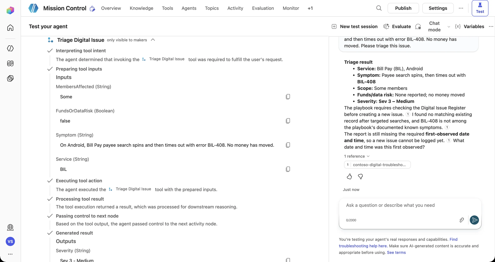

Briefing Test
Five minutes. One full test flight. Before the capsule docks for the day, prove that today's upgrades work together, and write down what Day 2 needs to fix.
Knowledge
Playbook-grounded answers
Workflow
Triage Digital Issue
Decisions
Four-branch topic
Real data
SharePoint register
Guardrails
Approvals + security
End-to-end test flight
Start a new conversation in the test pane (the refresh icon at the top of the pane), then run this sequence:

Telemetry check · Day 1 systems
Self-assessment Rate yourself
Be honest. This stays on your device. Rate each skill from 1 (heard of it) to 5 (could teach it).
Choosing Agent Builder vs. Copilot Studio
Writing agent instructions
Adding and testing knowledge
Building an agent flow with inputs and outputs
Topics, questions, and entities
Conditions and branching
Day 2 improvement log Improve
Before you log off, capture at least three improvements. Typical ones from past crews:
“Known issue” is hard-coded
Look it up in a real register instead → Mission 06.
Sev 1 only sends a message
It needs a real approval gate → Mission 07.
Knowledge sources aren't vetted
What if a document lies? → Mission 08.
No failure testing
What if the connector is down? → Mission 09.
Debrief End of Day 1
An upgraded agent design with a testable business workflow and conditional logic.
Connect it to real (synthetic) data, secure it, and prove it works.
Run the Which tool fits? challenge on your own backlog.